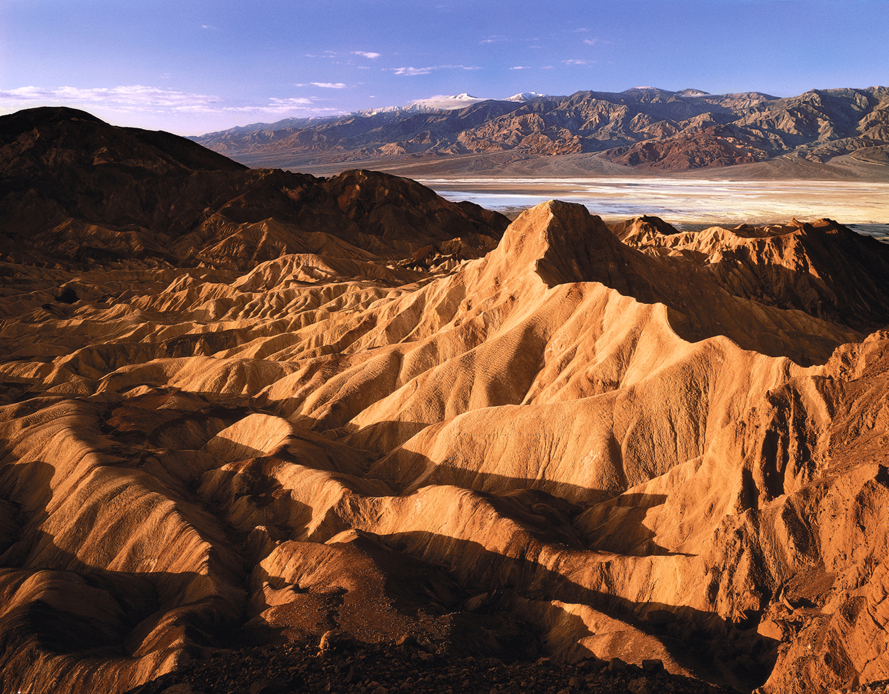

Often called the "Galapagos of North America," this park encompasses five remote, isolated islands off the coast of Southern California. Due to thousands of years of isolation, it features remarkable biodiversity with unique plants and animals found nowhere else on Earth, such as the island fox and island scrub jay. The surrounding marine sanctuary boasts abundant sea life, including seals, sea lions, dolphins, and migrating whales, with vibrant kelp forests perfect for snorkeling and diving.

This is a land of extremes, known as the hottest, driest, and lowest elevation national park in the United States. It features a starkly beautiful, surreal desert landscape with unique geological formations like the Badwater Basin, which is 282 feet below sea level. The park also contains the largest protected wilderness area in the contiguous US, offering a quiet escape with vast salt flats, colorful badlands, and towering sand dunes.
This park is renowned for its namesake, a dynamic and unusual-looking plant called the Joshua tree, and its nearly surreal desert landscapes. It's a popular destination for rock climbing and features a unique intersection of two vast desert ecosystems, the Mojave and the Colorado. The rugged rock formations and stark desert scenery create a unique environment that is particularly famous for its spectacular dark night skies and vibrant sunsets.